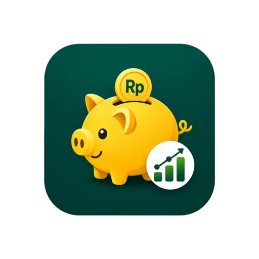

DOMPET & REKENING
▣ Bank◈ E-wallet▤ Tunai
Semua dompet.
Satu pandangan.
Kelompokkan bank, tunai, dan e-wallet. Lihat kekayaan bersih, total aset, dan liabilitas dalam satu tampilan Rekening.

FinTrack.DownloadKenali ke mana uangmu pergi. Catat pengeluaran, atur anggaran, dan wujudkan target keuangan—dalam satu aplikasi.
Piutang Rp0 Hutang Rp0
Data contoh · saldo seluruh dompet
Sayur: Rp30.000
Buah: Rp20.000
Total: Rp50.000
Pratinjau interaktif · tidak menyimpan transaksi
Data contoh · pilih tab atau tombol +
Dari transaksi harian sampai target jangka panjang. Satu tempat untuk melihat gambaran besarnya.
Kelompokkan bank, tunai, dan e-wallet. Lihat kekayaan bersih, total aset, dan liabilitas dalam satu tampilan Rekening.
Pilih pemasukan atau pengeluaran, dompet, kategori, dan subkategori. Pecah nominal lewat Rincian Barang, gunakan kalkulator nominal atau pemindaian struk.
Atur batas pengeluaran dan pantau progres tabungan menuju target yang kamu tentukan.
Sinkronkan data melalui FinTrack Cloud secara real-time. Cadangkan dan pulihkan data melalui Google Drive atau file lokal .ftbackup.
Pahami pengeluaran lewat grafik tren dan komposisi kategori. Lihat laporan bulanan, lalu ekspor ke PDF atau CSV untuk spreadsheet.
Anggaran, target menabung, hutang dan piutang, transaksi rutin, serta pengelola langganan.
Sembunyikan angka saldo dengan Mode Privasi. Gunakan kunci PIN atau fingerprint / biometrik untuk akses aplikasi.
Ekspor dan impor cadangan .ftbackup, pulihkan dari Drive, serta ekspor laporan untuk kebutuhanmu.
Sesuaikan tema warna dan ikon, rapikan kategori dan tag, serta gunakan kalkulator keuangan untuk simulasi.
Unduh APK FinTrack dari repositori distribusi.
Instal di Android, lalu mulai catatan pertamamu.
Pengelola keuangan pribadi
Android 7.0 atau lebih baru · File dari GitHub Releases
4ecc9a01f0954741f1468bdc71dd5160bb768f8bb53ce4620c9ad2548cedb686Informasi rilis terverifikasi 9 November 2026.
Tidak perlu Android Studio.
Cukup file APK dan perangkat Android kamu.
Tekan tombol Download APK. Tunggu sampai file fintrack.apk selesai diunduh di perangkatmu.
Buka file yang diunduh. Jika Android meminta izin, aktifkan “Izinkan dari sumber ini” untuk browser atau pengelola file yang digunakan.
Ikuti petunjuk instalasi, lalu buka aplikasi. Setelah selesai, kamu dapat menonaktifkan kembali izin instalasi dari sumber tersebut.
Halaman ini menyediakan APK untuk Android. Belum ada file instalasi iOS di repositori distribusi.
FinTrack mendukung pencatatan offline. Sinkronisasi cloud memerlukan koneksi internet.
Unduh APK terbaru lalu instal di atas aplikasi yang sudah ada. Cadangkan atau sinkronkan data terlebih dahulu dan hindari menghapus aplikasi lama sebelum pembaruan.
APK diunduh langsung dari GitHub, sehingga Android dapat meminta izin memasang aplikasi dari browser atau pengelola file. Periksa sumber unduhan dan tetap ikuti pemeriksaan keamanan Android.